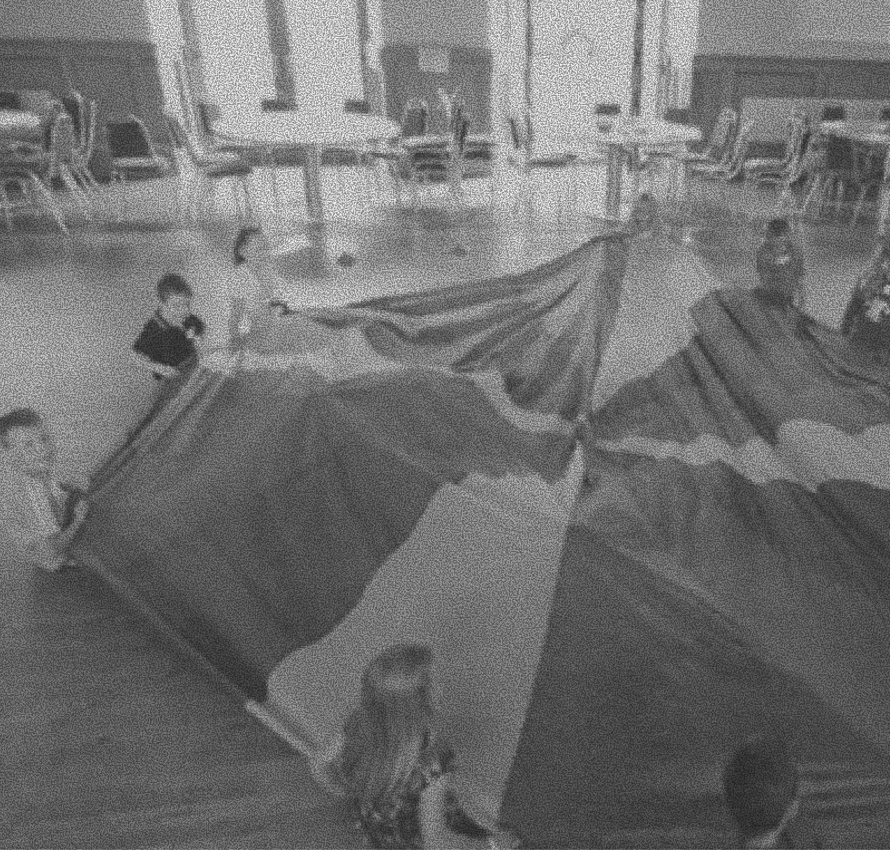
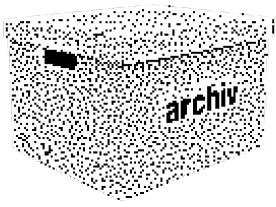

агентство рассматривает пространство как инструмент структурирования
поведения и перераспределения внимания. каждая зона обладает
регламентом, уровнем допуска и функциональной нагрузкой. новый сотрудник
входит в систему без права её трансформации, принимая маршруты,
дистанции и сценарии взаимодействия как заданные параметры. пространство
не декорирует процессы — оно их калибрует, ограничивает и направляет.
наблюдение встроено в архитектуру, а архитектура встроена в порядок
принятия решений. Индивидуальность не отменяется, но проходит процедуру
выравнивания. интеграция фиксируется не словами, а перемещениями по
уровням доступа. система не демонстрирует давление, она демонстрирует
устойчивость. чем быстрее субъект принимает пространственную логику, тем
менее заметным становится сам механизм управления.тогда границы
перестают восприниматься как ограничения и начинают работать как
навигационные оси. поведение становится предсказуемым не потому, что его
контролируют, а потому, что маршруты оптимизированы под логику системы.
внимание распределяется равномерно, исключая перегрузку и импровизацию.
со временем субъект усваивает алгоритм среды — движения становятся
автоматическими, решения — реактивными. пространство перестаёт быть
внешней структурой и превращается в продолжение внутренней дисциплины.


синхронизация завершится через синхронизация завершится через
синхронизация завершится через синхронизация завершится через
синхронизация завершится через синхронизация завершится через
синхронизация завершится через синхронизация завершится через
синхронизация завершится через синхронизация завершится через
синхронизация завершится через синхронизация завершится через
00
дней
12
часов
44
минут
19
секунд
возможно, это последнее, что ты помнишь, но, быть может,
в коробке хранится еще больше секретов?